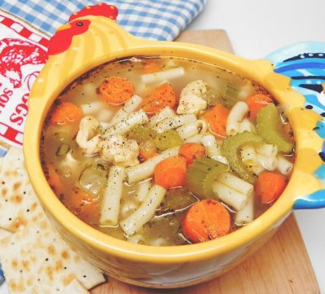

Chicken-Soup Recipe

Description
The spicy chicke-soup is a soup like any other. With meticulous preparation you get a soup that can be dished
for different occasions. As the name goes, we know it's predominantly going to be stocked with a lot of chicken
and any other condiments desired. There's not a fits-it-all approach here, but I'll share my own routine.
Ingredients
- 1 whole chicken
- 4 carrots, halved
- 4 stalks celery, halved
- 1 large onion
- water to cover
- Salt and pepper to taste
- 1 tsp chicken bouillon granules (optional)
Steps
- Cut the carrots, celery, onion and peper appropriately
- Put the chicken, carrots, celery and onion in a large soup pot and cover with cold water.
- Heat and simmer, uncovered, until the chicken meat falls off of the bones (skim off foam every so often).
- Take everything out of the pot and strain the broth.
- Pick the meat off of the bones and season the broth with salt, spices and chicken bouillon to taste
- Return the chicken, carrots, celery and onion to the pot, stir together, and serve.